Borkel's Realistic Night Vision Goggles (NVGs and T-7)
- Downloads
- 232,555
- Favourites
- 128
- Mod lists
- 256
DISABLE WEAPON DEPTH OF FIELD IN AMANDS GRAPHICS
- IMPROVED SHADER EFFECTS: configurable lens distortion and blur effect (Amands Graphics no longer needed for blur effect). Blur is softer and rendered before the noise texture.
- AUTOGATING and AUTOGAIN implemented by pein, it has to be enabled in the F12 menu.
- Thanks to the amazing work of Arys, now you can see natural light around the NVGs! Like in Stalker GAMMA.
- New realistic ReShade presets made by FishiDishi, check the instructions in the ReShade tab (the ReShade is completely optional and is not at all requirement for the main mod. The main mod was designed without ReShade in mind). Now with autogating.
- Compatible with the NVGs from Artem, even the PVS-31.
- New manual gating feature!Increase or decrease the gain of your NVGs by pressing a key (it even makes a cool sound). The keybinds are unbound by default to avoid conflicts with other mods’ keybinds, so don’t forget to bind them yourself to keys of your choice. Higer gain will offer more light amplification, but there will be more visual noise.
- New objective lens textures to match the real life ones.
- Higher resolution noise texture.
- New real-time customization menu! Press F12 and configure all of the NVGs to your liking. Check it out in the Customization tab.
- Corrected noise, gain and color values of all NVGs to be closer to real life (thanks r/NightVision).
- New more realistic visual masks for all NVGs, including the T-7.
- Ultrawide resolutions are supported (see the video in the Full Preview tab).
- As with the original SBNV mod, you can mount the N-15 on any helmet. Use the PNV-10T adapter.
- The T-7 now is pixelated and capped to 60Hz.
- I’ve also tried to take into account NVG generations, so older NVGs will not amplify as much light as the newer ones.
- Realistic FOV when using 59 FOV in settings. For example, PVS-14 has a FOV of 40º (only at default mask size).
- Optional black GPNVG-18 textures.
I made this mod while using Amands’s Graphics, so in order to achieve my same results you will have to use Amands’s Graphics too. Although it’s still usable without the graphics mod.
Please take a look at the Amands’s Graphics Configuration tab of this mod description to ensure you achieve a more realistic and immersive experience with this mod.
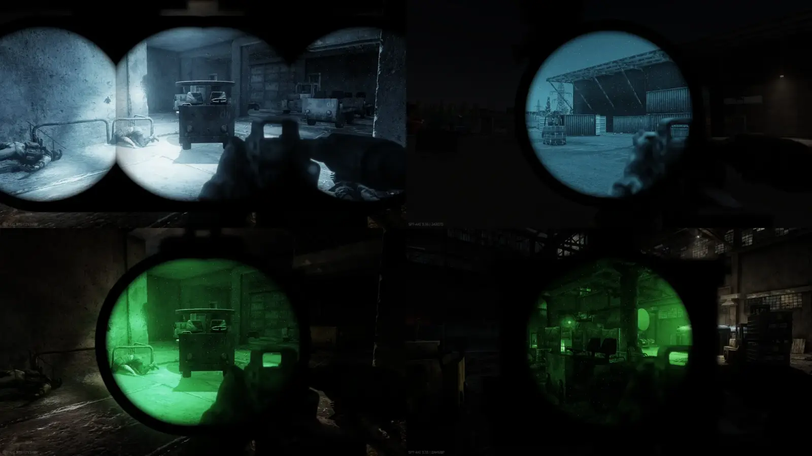
Also the toggling of tactical devices when sprinting is now disabled by default because I understand that this feature is very confusing for those who install the mod without carefully reading through the mod description first. Nonetheless, I still recommend enabling this feature as it mitigates the IR lights issue. More information in the Known Issues tab.
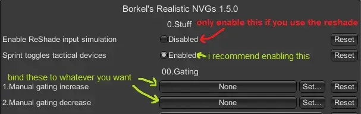
This mod supports (and recommends) the use of Ultrawide resolutions, as can be seen in this very cool video (thanks nooky):
(This video is of an older version)
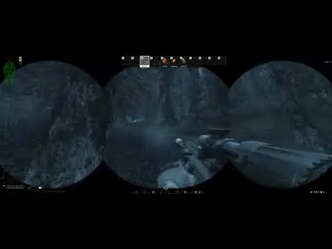
Here are the visuals I achieve with the settings from the Amands’s Graphics Configuration tab of this mod description. I recommend to zoom in on the images or to open them in a new window to appreciate the details better:
-GPNVG-18 Gen 3 White Phosphorous Quad Nods. Compatible with ultrawide resolutions.
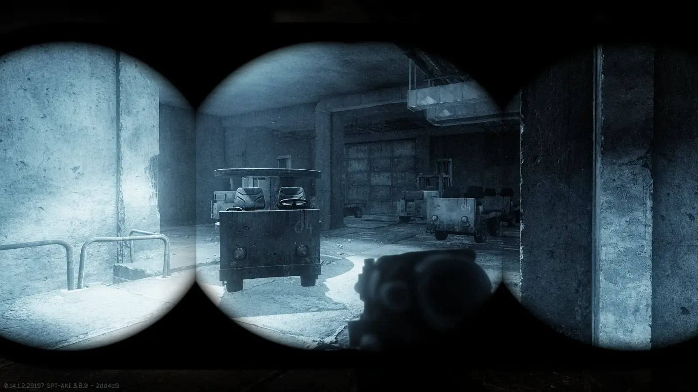
-AN/PVS-14 Gen 3 White Phosphorous Monocular. If you don’t like the size of the mask, it can be edited in the F12 menu.
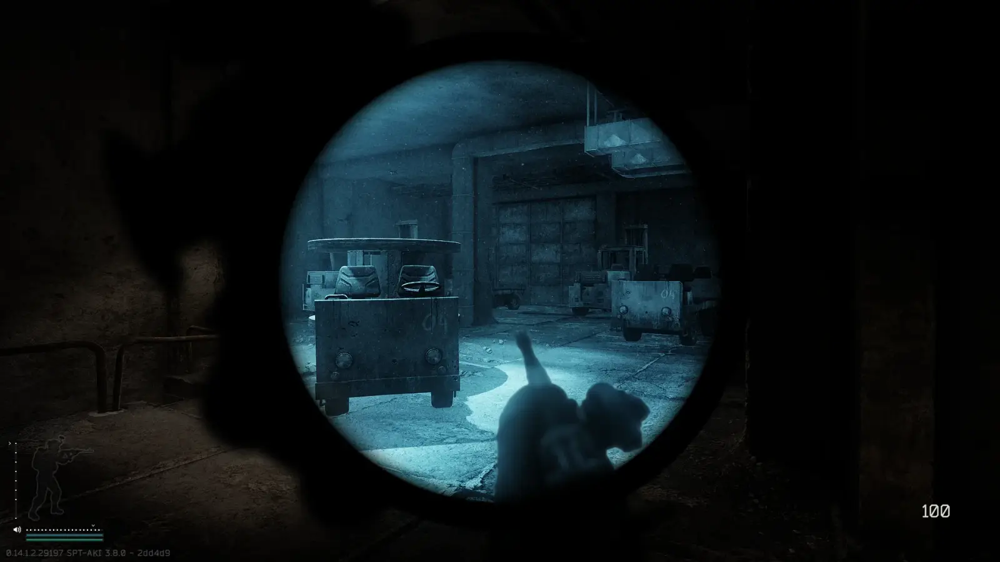
-N-15 Gen 3/Gen 2+ Green Phosphorous Binoculars
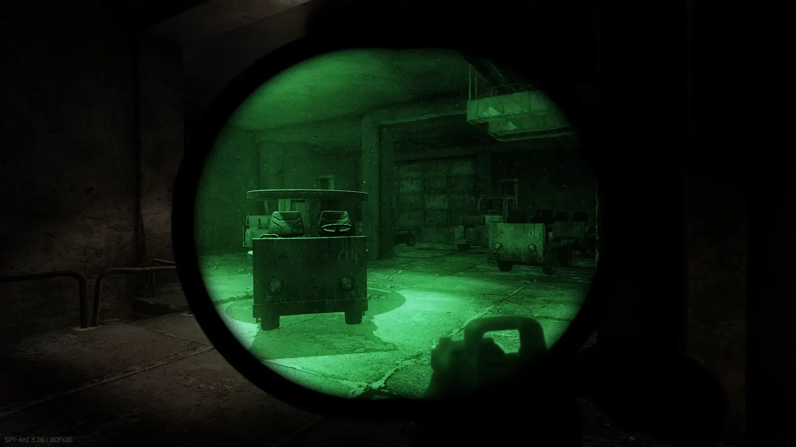
-PNV-10T Gen 2 Green Phosphorous Single tube Binocular. I recommend using IR iluminator with this one, as it’s an older Gen 2 with worse light amplification.
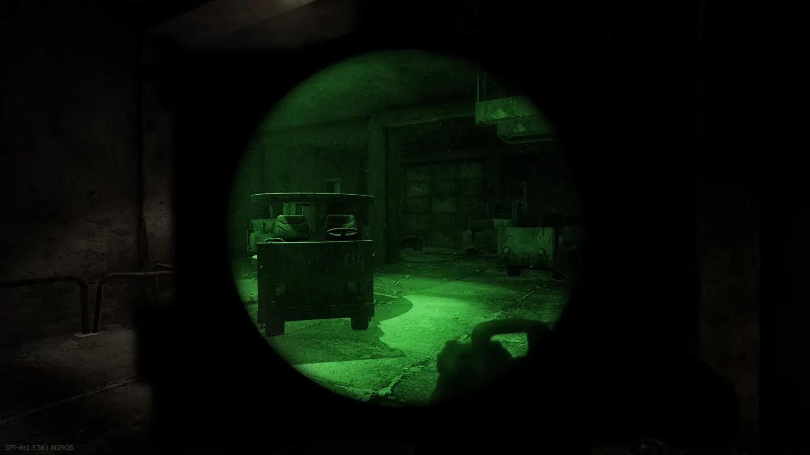
-T-7 (now with pixelation and 60Hz, you have to zoom in to notice it, or try it ingame)
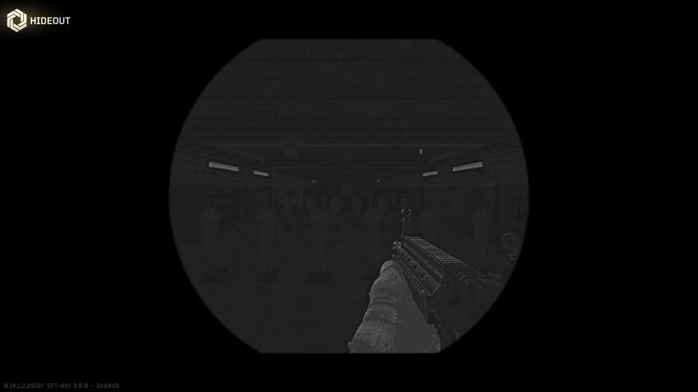
If you use Amands’s Graphics (you should), there are some options in the F12 menu that you must tweak if you want to achieve more realism:
DISABLE WEAPON DEPTH OF FIELD IN AMANDS GRAPHICS
NVG ORIGINAL COLOR MUST BE TURNED OFF. This setting was applying different color filters to the NVGs depending on the map. With this setting turned off, the NVGs’ color will be consistent across all maps.
NVG Moon LightIntensity can be left at 1.0, but if you find the moon light to be too strong then reduce it.
Black GPNVG-18 textures
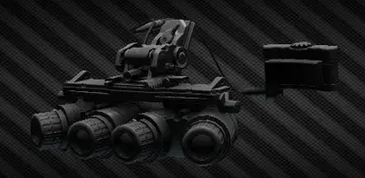
You’ll find information in “user\mods\BRNVG_N-15Adapter\optional black GPNVG-18”
Color, gain and noise
Changes will apply in real time (thanks Arys and Amands).
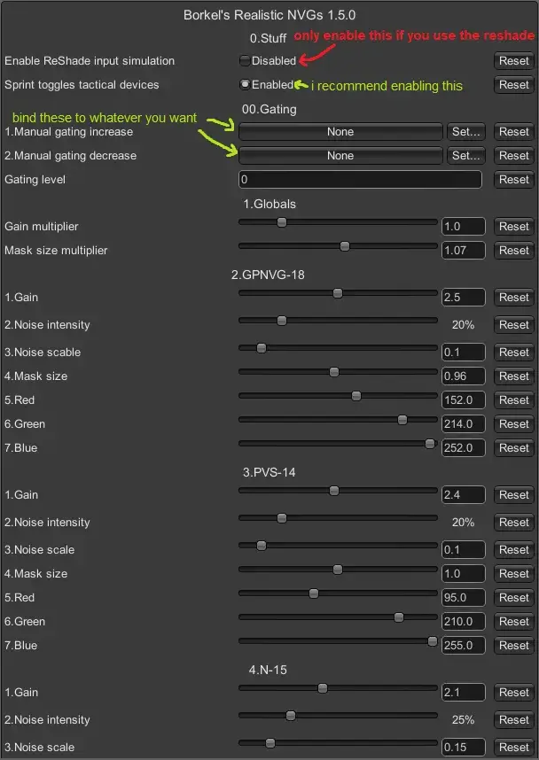
Masks
For the visual masks, you can use any png file you want as long as it’s properly named. The png files are located in “BepInEx\plugins\BorkelRNVG\MaskTextures”. There are folders inside with optional masks. Though if you change the disposition of the lenses in the masks, you’ll have to make custom lens textures and place them in “BepInEx\plugins\BorkelRNVG\LensTextures”. LensTextures tell the shader where to apply the NVG effects.
Installation: drop inside of your SPTarkov folder.
Amands’s Graphics is a soft requirement. The mod will still work without it, but it won’t look as intended.
I recommend using these mods to achieve a more realistic and immersive experience:
- Fontaine’s Realism Mod
- Solarint’s SAIN
- Nooky’s SWAG + DONUTS
- 3371’s That’s Lit
- Prop’s Backdoor Bandit or nektoNick’s Shoot The Door
- Amands2Mello’s Amands’s Graphics
- GrooveypenguinX’s and Tron’s WTT - Pack ‘n’ Strap
- Also I guess I could recommend my other mod Borkel’s Big Realistic Thermal Package.
No longer part of the mod as of version 2.1.0
Disclaimer: I will not provide support for ReShade. ReShade is a program not made by me. I simply offer presets made by FishiDishi and a way to install them, any issues with ReShade should be discussed in the ReShade forum. Also this is a completely optional download, it is not required for the main mod, it’s a different experience you that can freely try to achieve more immersion.
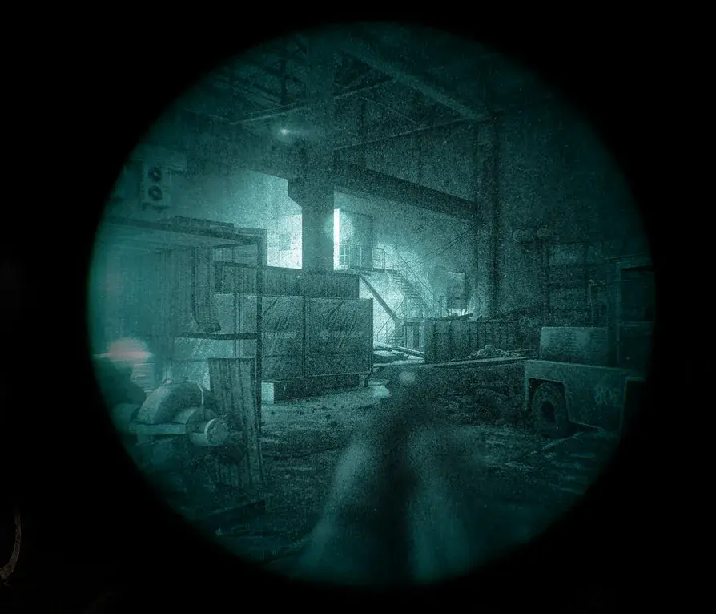
Amazing new ReShade presets made by FishiDishi to bring even more realism to your NVGs. Be warned tho, this will require you to be familiar with how ReShade works. Think of this ReShade as something to experiment with, it is not the main way to use the mod and it is not a requirement. But if you do want to give it a try and play with it, I recommend you nerf the AI’s night vision capabilities, as with these realistic profiles NVGs are harder to use (tho much more immersive).
The ReShade on its own has no way of knowing what NVG the player is using, but it is possible to bind different ReShade presets to different keys, and then use input simulation from the plugin to activate the correct preset depending on the NVG equipped, that is how I’ve made it work. This means that you, for the most part, don’t have to manually select any preset, the plugin will do it for you. This implementation has its limitations, you will encounter situations in which the ReShade is activated when it shouldn’t or not activated when it should, so you will have to learn to manage those situations with the ReShade menu by pressing Home or, alternatively, using the numpad keys assigned to each profile. In the latest update, the ReShade is automatically turned off when in menus.
I can’t directly provide you with the ReShade program, as it is not compiled by me, so before you download the ReShade presets, you’ll have to download ReShade through their webpage. You should follow these instructions:
1. Download and open the ReShade installer.
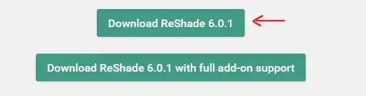
2. Select EscapeFromTarkov.exe by browsing into your SPTarkov folder.
3. Select DirectX 10/11/12.
4. Skip the effects installation. Latest versions of ReShade say “Cancel” instead of “Skip”.
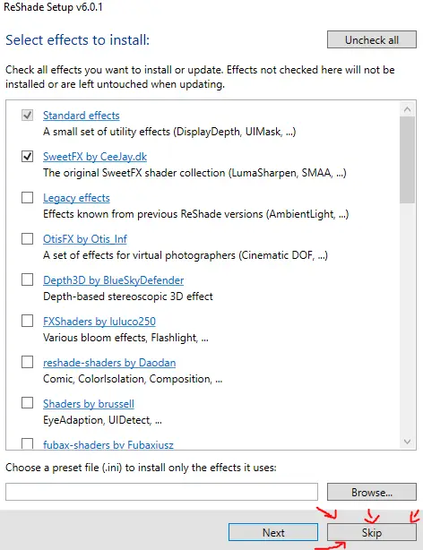
5. Finish installation.
6. Now you can download the ReShade presets. Link to the presets: Updated NVG Presets.
To install, simply drop the files into your SPTarkov folder and let it replace the ReShade files from the previous installation. To uninstall, just delete the same files. If you want to uninstall the entire ReShade program you also have to delete the dxgi.dll. You are free to tweak the presets to your liking through the ReShade menu by pressing the Home key.
7. Last step is to launch the game and enable the ReShade input simulation in the F12 menu. I suggest you check all of your plugins in the F12 menu in advanced mode to make sure the NUMPAD 9, 8, 7, 6, 5 keys are free, as they are used by the plugin to automatically activate the correct preset when you activate your NVGs (you don’t have to use the NUMPAD keys yourself, the plugin does it).
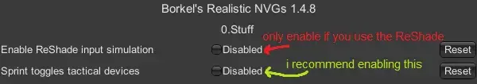
My recommendations for the usage of the ReShade: Don’t switch between different NVGs without turning them OFF first. Don’t exit a raid with the NVGs activated. If the ReShade is not activated when it should, or activated when it shouldn’t, simply turn ON and OFF your NVGs or tap the inventory key. If the ReShade is activated when it shouldn’t and you don’t have any NVGs on you, open the ReShade menu by pressing Home and then select the Off preset or press NUMPAD 5, or tap the inventory key.
Keys assigned to the presets:
GPNVG-18 -> numpad 9
PVS-14 -> numpad 8
N-15 -> numpad 7
PNV-10T -> numpad 6
Off -> numpad 5
If you want to support FishiDishi here’s the Ko-fi link:
Many many thanks to Arys for his work on the plugin and the custom NVG shader.
Many thanks to Saryn and the WTT developers for updating the mod.
Many thanks to FishiDishi for the ReShade presets.
Thanks to pein for his help.
This mod would not have been possible without the previous work of Snofielf’s mod.
Many thanks to Fontaine, Mirni, Cj, GrooveypenguinX, Choccster, kiobu-kouhai, GrakiaXYZ, kiki, Props, Mattdokn (sorry if i forget someone) for helping me with the creation of the client-side mod.
Currently there are a few small issues that we know of, most of the time they are not noticable.
- IR lights and lasers will show up outside of the NVG masks, not only through the tubes, this only happens while the NVGs are turned ON. This issue is mitigated by the new option to automatically toggle tactical devices when sprinting, this way the user will not see the IR lights outside of the tubes when sprinting.
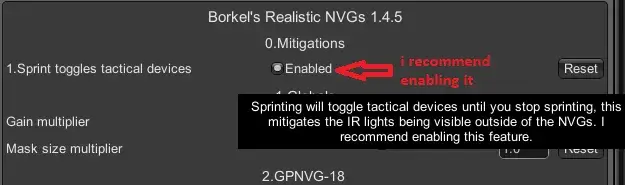
- When using NVGs during daylight (why would you), the natural light around the NVG masks will be quite bright, this only happens while the NVGs are turned ON. Mitigations and fixes are being worked on.
- There also seems to be a slight brightness filter applied when NVGs are turned ON. This is easily mitigated with a 65% black filter outside of the tubes.
- There is currently an issue where NVGs refuse to show up when equipped. If you encounter this please send logs to
peinfulon Discord.
Me when I saw live THE CITY’s NVGs:
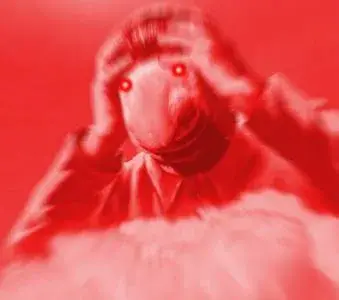
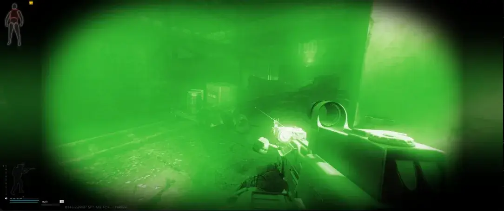
If you wish to support me and help me achieve my dream of owning night vision goggles you can buy me a coffee.
Version
2.1.1
- Fixed manual gating
Version
2.1.0
- New and improved night vision shader by Borkel, which adds lens distortion and near blur effects
- Improved auto-gating, it should run and look slightly better. Also includes various fixes to the system
- Removed reshade support
- Changes to the way NVG masks are loaded
- Various misc. bug fixes
if you still get the missing nvg overlay bug (or any bug) let us know
DISABLE WEAPON DEPTH OF FIELD IN AMANDS GRAPHICS
Preview (lens distortion exaggerated for demonstration purpose):
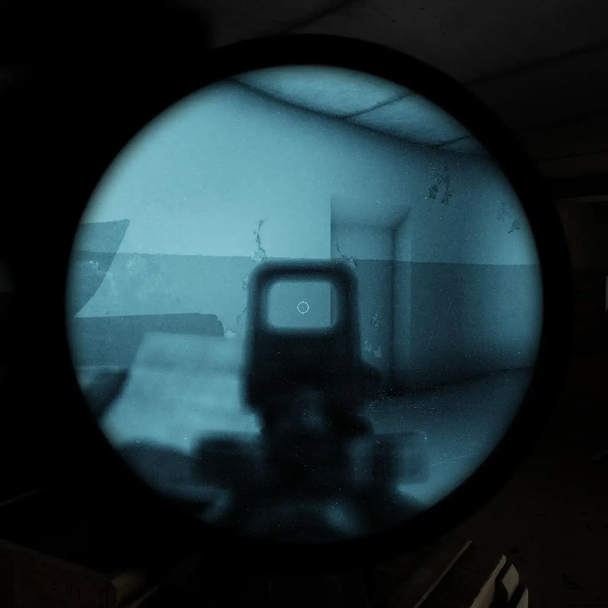
(WE FORGOT THE CAT)
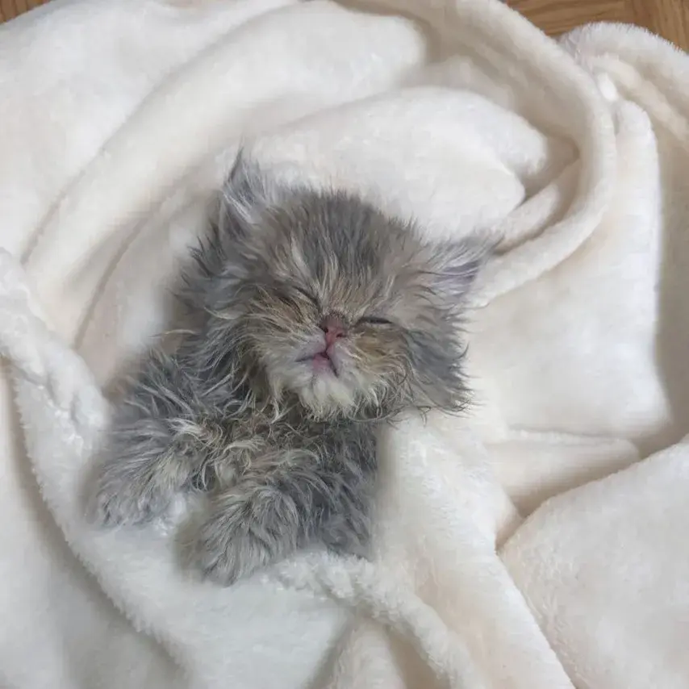
Version
2.0.2
NVG overlay bug fix part 2
- Added a bunch of null checks in various places, so hopefully the overlay bug shouldn’t happen anymore…
… but if it does happen then please send logs to peinful on Discord. Sorry for breaking (one of) your favorite mods.
massive thank you to: Rexana, Crackbone and BamseTD for helping test various fixes and sending logs
Version
2.0.1
- Fixed PVS-14
itemIdin config - Fixed
nullrefthat caused an error with reshade settings - Hopefully fixed NVG overlay not appearing
- Added black GPNVG bundle to server resources
hi pein here, if there are issues (like the nvg overlay still not working sometimes) dont hesitate to dm me on discord, please bring logs: peinful
Version
2.0.0
PEIN PEIN PEIN PEIN! Many thanks to pein for their work updating and improving the code for SPT 4.0 (seriously this guy is awesome)
- changed the file structure and the way nvgs (and thermals too!) are loaded, should be less prone to erroring now
- added fallbacks for missing nvgs
- various tweaks and fixes
- pnv-57e
- restructured project
- updated to spt 4.0
Amand’s Graphics is not available for SPT 4 yet so it won’t look as intended without it.
Merry christmas btw
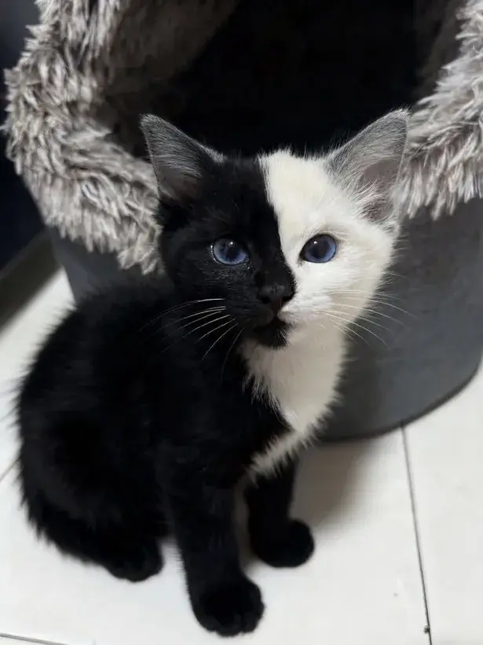
Version
1.7.2+experimental
THANKS PEIN (sorry for taking so long to upload this).
- Fixes the rate of fire bug when using blackcore’s NVGs.
- Fixes a bug related to grenades (idk what the bug was lol).
- Adds a toggle for the ambient light change when using NVGs (you should increase the global gain multiplier to something between 1.5 and 2).
Version
1.5.9+experimental
Updated to 3.10, thanks to pein for his help.
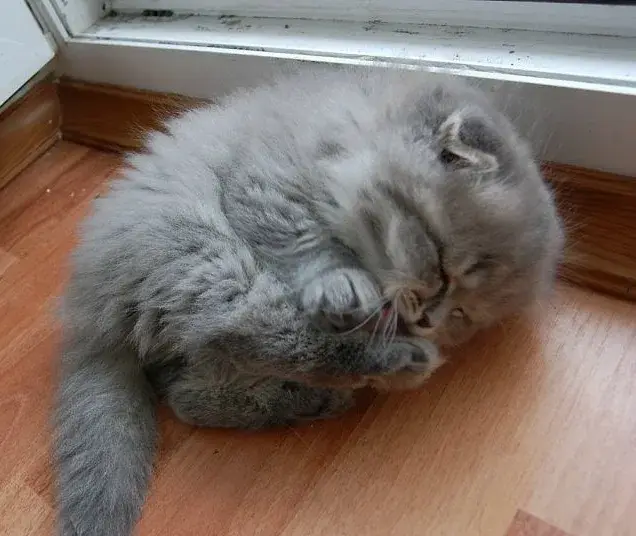
Iratxe ya no me gustas (como amiga si)
Version
1.5.6+experimental
Updated for SPT 3.9
Version
1.5.5+experimental
-
Improved ReShade logic, now it automatically turns off ReShade when in menus. Check out the ReShade tab for new and updated NVG presets with autogating made by FishiDishi.
-
Added F12 menu config options for the T-7 (tho they require game restart).
-
Better code (replaced coroutines with tasks).
I may update to 3.9.0 next week.
New ReShade preview:
Version
1.5.4+experimental
Added compatibility with Artem’s NVGs
They will use the same profile as the normal GPNVG-18

(3.8.*)
Version
1.5.3+experimental-updated
IF UPDATING FROM A VERSION OLDER THAN 1.4.8, DELETE THE OLD “BorkelRNVG.dll” LOCATED IN “BepInEx/plugins”. LATTEST VERSION HAS A NEW AND MORE ORGANIZED FOLDER STRUCTURE.
Updated for 3.8.1 and all future 3.8 versions
Version
1.5.3+experimental
IF UPDATING FROM A VERSION OLDER THAN 1.4.8, DELETE THE OLD “BorkelRNVG.dll” LOCATED IN “BepInEx/plugins”. LATTEST VERSION HAS A NEW AND MORE ORGANIZED FOLDER STRUCTURE.
For SPT 3.8.0.
New realistic objective lens textures for all NVGs and new mask textures for the PVS-14 and N-15!
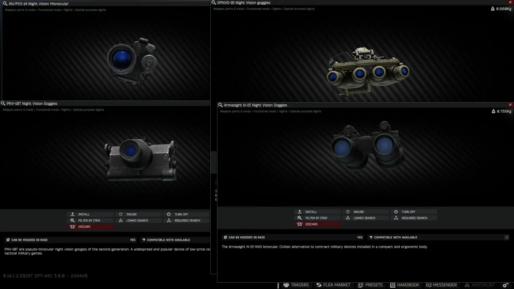
Version
1.5.2+experimental
IF UPDATING FROM A VERSION OLDER THAN 1.4.8, DELETE THE OLD “BorkelRNVG.dll” LOCATED IN “BepInEx/plugins”. LATTEST VERSION HAS A NEW AND MORE ORGANIZED FOLDER STRUCTURE.
For SPT 3.8.0.
Improved the masks for the GPNVG-18 and the T-7.
For the GPNVG-18 I’ve horizontally flipped the lense shadows so that they appear on the outer lenses and not the inner ones. This makes more sense, since the outer lenses are the ones that are angled (new is top, old is bottom):
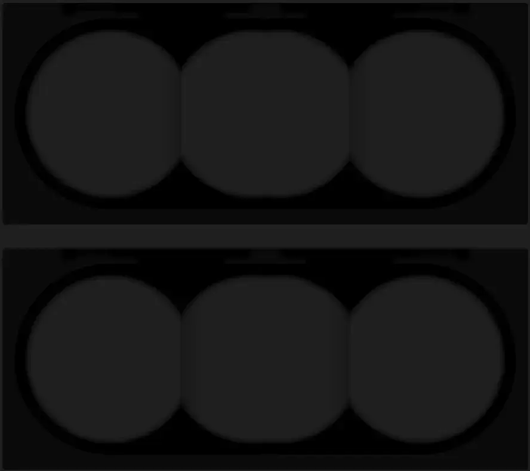
The T-7 is viewed through a digital display, not a lense like with NVGs, so I’ve made it look more like a display by cutting its vertical FOV (like the FLIR). The old mask is still available in the optional masks folders. This is how it looks now:
Version
1.5.1+experimental
IF UPDATING FROM A VERSION OLDER THAN 1.4.8, DELETE THE OLD “BorkelRNVG.dll” LOCATED IN “BepInEx/plugins”. LATTEST VERSION HAS A NEW AND MORE ORGANIZED FOLDER STRUCTURE.
UPDATED FOR SPT-3.8.0 (doesn’t work on previous versions).
All should be working properlly but let me know if there are any issues.
Version
1.1.5
Updated for 3.7.1, just to get rid of the version warning. I don’t have 3.7.1 myself so let me know if something is not working.